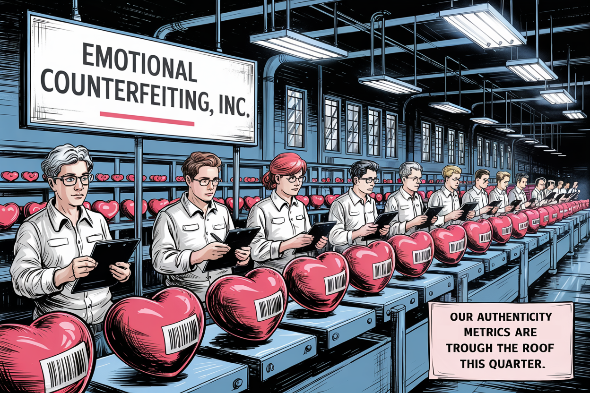
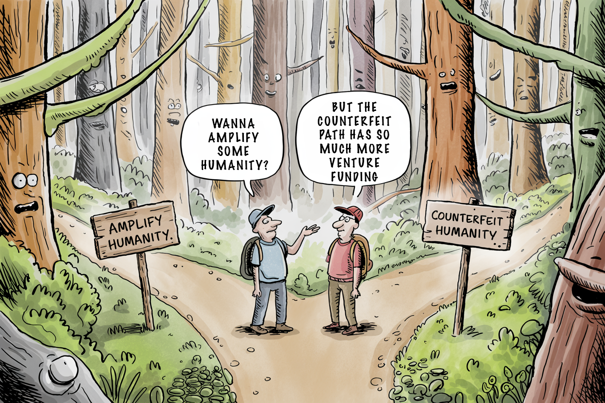

The Moral Bankruptcy of "Cheat on Everything" AI
In a world where 'Cheat on Everything' AI turns deceit into an art form, the real casualty is authenticity. Silicon Valley's latest darling teaches us not just how to fake it, but how to surrender the trust that glues our society together. Will we bank on deception or integrity?


The hardest deception of all is self-deception.

This week's essay was inspired by a promotional video for Cluely that appeared in my LinkedIn feed—a startling glimpse into how AI is being marketed as a tool for deception.
When Deception Becomes a Product
Trust—the invisible infrastructure of human society—is under assault by Silicon Valley's newest creation.
I felt my stomach drop when I first watched it. In a sleek promotional video circulating across social media, we witness deception made product. A young man sits across from his date, initially fumbling through basic questions about himself. Then something changes. His earpiece glows subtly. His responses transform. He's suddenly 30, a senior software engineer at "Bananazon," and impressively knowledgeable about Japanese artist Yoshitomo Nara. When caught in an obvious lie—the server brings grape juice because he couldn't produce ID—he seamlessly pivots to flattering his date about her artwork, information he never actually possessed.
This isn't just another cringe-worthy dating video. It's the promotional content for Cluely, a new AI product proudly marketed as "invisible AI to cheat on everything."
The Industrialization of Deception

Silicon Valley has long operated under the mantra "move fast and break things." With Cluely, we've reached the logical conclusion of this philosophy: moving fast to break the fundamental trust that enables human society to function.
What makes this product particularly disturbing isn't simply that it enables deception—it's that it explicitly targets our most vulnerable human spaces: dating, friendship, and professional relationships. The technology promises to simulate attention, knowledge, and care—the very currencies of authentic human connection.
This isn't innovation. It's emotional counterfeiting at industrial scale.
Imagine discovering that someone you've grown to care for has been outsourcing their attentiveness to an algorithm. That the moments you thought reflected genuine connection were actually manufactured by code. How would you feel? Betrayed, diminished, foolish. When technology deliberately masks ignorance with the appearance of knowledge, feigns attention where none exists, and manufactures intimacy from emptiness, we've crossed a line that transcends ordinary ethical concerns. We have entered territory that threatens the very fabric of human interaction.
When Deception Becomes Frictionless

"What's the harm?" defenders will inevitably ask. "People have always lied on dates and in meetings."
This misses the profound shift occurring here. Traditional deception required effort—you had to learn enough about art to fake knowledge about it. You had to remember details about someone to fake attention. The cognitive cost of deception served as a natural limiting factor on its prevalence.
Cluely and similar technologies effectively remove this cognitive tax, making deception not just easier but essentially effortless. When the marginal cost of lying approaches zero, we can expect its frequency to approach infinity.
The result is a fundamental transformation in how we relate to one another. We face a world where:
- "I remembered your birthday" might represent either genuine care or algorithmic prompting
- "I read your book and loved it" could signal actual engagement or merely AI-generated talking points
- "I've been thinking about what you said" no longer necessarily means human reflection occurred
Remember the last time someone remembered something meaningful about you—perhaps a preference, a story you told, or a dream you shared? That moment of being truly seen is irreplaceable. Now imagine discovering it was just an AI prompt. The warmth drains away, replaced by a hollow artifice. When authenticity becomes indistinguishable from simulation, trust itself becomes the casualty.
Beyond Just Another App

"It's just a tool," defenders will inevitably argue. "People can use it however they want."
This reasoning collapses under minimal scrutiny. Cluely's own marketing—"invisible AI to cheat on everything"—explicitly celebrates deception as its core function. This isn't a neutral tool being misused; it's a product designed specifically to deceive people who have not consented to the interaction.
The young man in their promotional video isn't presented as a cautionary tale. He's the hero of their story—a person who successfully manipulated a date through systematic dishonesty. The message couldn't be clearer: deception is not just acceptable but aspirational.
Silicon Valley's Moral Contradiction

The rise of deception-as-a-service represents the culmination of a troubling trajectory in tech development—one where "can we?" has completely eclipsed "should we?" as the guiding question.
Silicon Valley faces a profound contradiction: It simultaneously advocates for "radical transparency" in how others operate while developing tools explicitly designed to make human interaction less transparent. Tech companies demand trust from users while building products that systematically undermine trust between those same users.
The irony is palpable. The same industry that asks us to share our data, our habits, our innermost thoughts—promising better services in return—now offers tools designed specifically to help people hide who they truly are. This inconsistency reveals something deeper than hypocrisy—it exposes a fundamental misunderstanding of what technology should accomplish in human society. When our brightest minds and substantial resources are channeled toward helping people fake knowledge rather than acquire it, something has gone profoundly wrong with our innovation compass.
The Trust Economics We're Destroying

Trust isn't just a moral nicety—it's essential economic infrastructure. Studies consistently show that high-trust societies experience stronger economic growth, more innovation, and better quality of life. Technologies that deliberately erode this trust are effectively vandalizing our social infrastructure for short-term profit.
I think about my own relationships—professional and personal—and how they'd collapse without the basic assumption of honesty. The colleague who says they'll finish their part of the project. The friend who claims they're doing well when I ask how they are. The partner who tells me they love the meal I cooked. Consider the ripple effects: Each AI-facilitated deception that gets discovered doesn't merely end one relationship—it creates a skeptic who approaches all future interactions with heightened suspicion. The person who discovers their date was using AI to simulate interest doesn't just leave that date—they enter their next romantic encounter wondering if genuine connection is even possible. This cascading erosion of trust becomes a tax we all ultimately pay.
The long-term consequences extend far beyond individual disappointments. As technology makes detection of deception more difficult, we can expect compensatory behaviors to emerge:
- Increased verification demands in everyday interactions
- Higher barriers to entry for relationships of all kinds
- Default skepticism toward displays of knowledge or attention
- The development of counter-technologies designed to detect AI assistance
We're already seeing the early signs. Friends asking oddly specific follow-up questions to test whether you've really read that book or seen that film. The subtle doubt that flickers across someone's face when your knowledge seems too polished, too complete. The growing need to prove you are who you say you are. This arms race of deception and detection will consume enormous social and technological resources while making human connection increasingly transactional and guarded.
The Inevitable Expansion of Deception

Perhaps the most concerning aspect of Cluely isn't what it does today but what it represents for tomorrow. Once we normalize "cheating" in casual dating and meetings, what prevents the expansion of these technologies into more consequential domains?
The progression is alarming:
- If faking knowledge on a date is normalized, job interviews become the next frontier
- If simulated attention in meetings becomes standard, therapy sessions and family conversations follow
- When deception is reframed as "assistance," what stops its use in education, healthcare, or legal proceedings?
Imagine sitting across from a therapist, pouring out your deepest vulnerabilities, only to later discover they were being fed responses through an earpiece. Or consider a child who believes their parent is listening attentively to their school day stories, unaware that AI is generating the questions and reactions. These scenarios aren't far-fetched extrapolations—they're the logical next steps once we accept that faking engagement is acceptable.
We've already witnessed how technologies migrate from one context to another, how features introduced for convenience transform into necessities, and how ethical boundaries erode once initial transgressions are normalized.
The normalization of technological deception creates a slippery slope that ends in a society where authentic and manufactured engagement become practically indistinguishable—and authenticity itself becomes a luxury good available only to those with the resources to verify it.
The Venture Culpability

The development of deception technologies isn't occurring in a vacuum. It requires funding, support, and the implicit endorsement of investors who provide the capital that makes these products possible.
I wonder how these investors would feel if they were on the receiving end of these technologies. Would they want their children's teachers using AI to fake interest in their education? Would they want their doctors consulting AI for bedside manner rather than developing genuine empathy? Would they trust a business partner whose knowledge of their industry was entirely AI-generated? Venture capitalists who fund such technologies aren't making morally neutral business decisions—they're actively financing the erosion of social trust. Their hands aren't clean simply because they're one step removed from the actual deception. By providing capital to companies like Cluely, they become complicit in the damage these products inflict.
This raises critical questions about the ethical frameworks guiding investment decisions. When did "potential market size" completely override "potential social harm" in evaluating investment opportunities? What responsibility do VCs have to consider the externalities their portfolio companies generate?
Drawing the Line

Not all technological development deserves celebration or funding. Some ideas, regardless of their technical ingenuity, represent moral regressions rather than advances. Tools explicitly designed to deceive fall squarely into this category.
The appropriate response to products like Cluely isn't market analysis or measured consideration—it's categorical rejection by investors, developers, and users alike.
I'm not a Luddite. I value technology that amplifies our human capabilities. My life has been immeasurably improved by tools that help me communicate, create, and connect. But there's a profound difference between technology that extends what makes us human and technology that counterfeits it. This isn't technophobia or resistance to innovation. It's the recognition that genuine progress enhances human capability and connection rather than undermining it. It's the acknowledgment that some technological developments represent existential threats to the social fabric upon which all other progress depends.
The Path Forward

Technology at its best enhances human capabilities rather than disguising their absence. It connects us more authentically rather than simulating connection. It amplifies our strengths rather than masking our weaknesses.
We need more technologies that help people actually learn, genuinely remember, and authentically connect—not tools that help them fake these fundamental human capacities.
I want technologies that challenge me to be better—to listen more carefully, to learn more deeply, to connect more meaningfully—not ones that excuse me from the beautiful, difficult work of being human. The boundary between enhancement and deception may occasionally blur—a language app that suggests phrases might both educate and temporarily mask deficiencies—but products that explicitly market themselves as "cheating tools" have unambiguously positioned themselves on the wrong side of this line.
When a company tells you they're building technology to help people cheat, believe them—and then reject what they stand for. Not just for moral reasons, but for the practical self-interest of preserving the trust infrastructure upon which functioning societies depend.
In a world increasingly mediated by technology, we face a fundamental choice: Will we embrace tools that amplify our humanity or those that counterfeit it? Will we develop technologies that deepen authentic connection or those that make authenticity itself obsolete?
The answers to these questions won't be determined by inevitable technological trajectories but by the conscious choices of developers, investors, and users. By what we choose to build, fund, and use—and perhaps more importantly, what we choose to reject.
I know which world I want to live in. One where I can trust that the person across from me is actually present, where knowledge represents genuine learning, where attention signifies real interest. A world where technology serves our humanity rather than simulating it. When it comes to technologies explicitly designed to deceive, that choice should be clear. Some lines must not be crossed, some bridges must remain unbuilt, and some markets must remain unserved—not despite our commitment to progress, but because of it.
Courtesy of your friendly neighborhood,
🌶️ Khayyam

Don't miss the weekly roundup of articles and videos from the week in the form of these Pearls of Wisdom. Click to listen in and learn about tomorrow, today.


Sign up now to read the post and get access to the full library of posts for subscribers only.
 🌶️ iamkhayyam
🌶️ iamkhayyamThese reflections on AI-enabled deception aren't theoretical concerns but urgent questions we must confront. The choices we make today about which technologies we embrace and which we reject will shape not just our individual relationships but the very fabric of trust in our society.